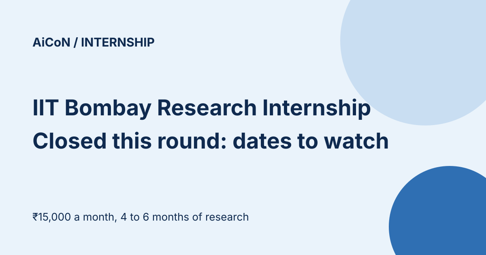

IIT Bombay Research Internship Award: closed for now, key dates and how it works
The IIT Bombay Research Internship Award is a full-time research internship for external students on specific IIT Bombay research projects. This round's applications are closed: the official page says the last date was extended to 5:30 PM on 29 September 2026. Here is how the award works and the dates still ahead, so you can catch the next round.

What is the award?
According to IIT Bombay's Research and Development (IRCC) page, the awards are for specific research projects. Project details are made available to candidates so they can apply for projects of interest. The number of interns is limited to the number of projects available. Selected interns work full time for four to six months and receive a fixed stipend of ₹15,000 per month. Campus accommodation on a sharing basis is subject to availability and applies to non-Mumbai candidates.
Dates for this cycle
| Applications | Closed. Extended to 5:30 PM, 29 September 2026. |
|---|---|
| Shortlist announced | 13 October 2026 |
| Interviews | 26 October to 5 November 2026 |
| Results | By 10 December 2026 |
| Joining | 21 December 2026 to 20 January 2027, exact date agreed with the faculty in-charge |
| Duration | 4 to 6 months |
The page labels these timelines as tentative.
If you already applied
Watch the official page for the shortlist on 13 October 2026 and be ready for interviews from 26 October. Check the page and your registered email only.
If you missed it
- Bookmark the official page: ircc.iitb.ac.in/IRCC-Webpage/IITBInternship/.
- Check it again when the next cycle is announced. We do not know when that will be.
- Look at the "How To Apply" page there for the process when it reopens.
We did not log in or apply, and we did not read the project list.
Frequently asked questions
Is there an application fee?
The page we read does not mention one. Confirm on the official site.
Can I still apply this year?
The official page shows the application window ended on 29 September 2026.
Source: IIT Bombay IRCC internship page. Checked 8 October 2026. This is an AiCoN explainer, not a government publication.